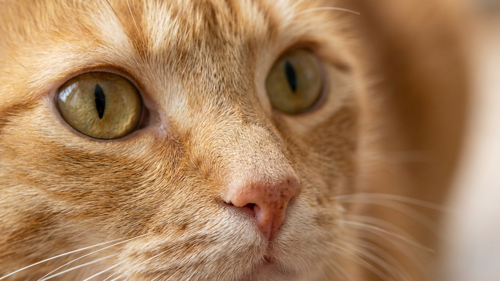

Овощи в миске: что можно кошкам и собакам, а что под запретом

22 августа 2026 · 3 минуты чтения · Питание · Кошки и собаки
Хозяин тянется за морковкой и задаётся вопросом: а можно кусочек питомцу? Одни овощи — безопасная добавка, другие токсичны даже в небольшом количестве. Ниже — чёткие списки для кошек и собак, правило 10% лакомств и три продукта, которые нельзя давать никогда.
Кошка и собака: в чём разница
Собака — всеядная: пищеварение эволюционно приспособлено к смешанному рациону, растительная клетчатка усваивается нормально. Кошка — облигатный хищник: её организм не вырабатывает ферменты для переработки большого количества растительной пищи. Для кошки овощи — только небольшая добавка, а не полноценный компонент рациона.
Что можно давать
Собакам и кошкам (умеренно, приготовленными):
- Морковь — источник бета-каротина, хорошо переносится варёной или в виде пюре.
- Кабачок и тыква — мягкие, легко усваиваются, помогают при нарушениях пищеварения.
- Брокколи и цветная капуста — только в небольших порциях и только приготовленными.
- Огурец — подходит как лакомство, почти без калорий, хорошо принимается в сыром виде.
- Зелёный горошек — допустим в небольших количествах, без соли и консервантов.
Только собакам (кошкам не рекомендуется):
- Сладкий перец (без семян) — богат витамином C, но кошкам не нужен дополнительный C.
- Свёкла — допустима изредка, окрашивает мочу (не тревожный признак), кошкам избыточна.
С осторожностью
- Капуста белокочанная — может вызывать газообразование, давать только приготовленной и редко.
- Шпинат — содержит оксалаты, не подходит питомцам с проблемами мочевыделительной системы; разовые порции безопасны.
- Томаты — спелый красный плод допустим изредка, зелёные части (ботва, незрелые томаты) токсичны.
- Картофель — только варёный и без кожуры, сырой крахмал не усваивается; чипсы и жареный — никогда.
Что нельзя давать — три под абсолютным запретом
- Лук и чеснок (в любом виде: сырой, варёный, порошок, в составе блюд) — нельзя ни кошкам, ни собакам.
- Виноград и изюм — нельзя собакам; для кошек тоже нежелательны.
- Авокадо — содержит персин; нельзя ни кошкам, ни собакам.
Эти продукты не давать даже как «один маленький кусочек».
Как вводить овощи правильно
- Тепловая обработка: большинство овощей давать варёными или запечёнными без соли, масла и специй. Сырыми — только огурец и морковь (небольшими кусочками).
- Форма подачи: пюре или мелкая нарезка. Крупные куски — риск подавиться, особенно у кошек.
- Правило 10%: все лакомства и добавки — не более 10% суточного рациона по калориям. Остальное — основной сбалансированный корм.
- Вводить постепенно: новый продукт — по одному, маленькая порция в первый раз, наблюдение за реакцией в течение суток.
- Кошкам — совсем немного: чайная ложка варёного кабачка к еде — уже достаточно. Цель — разнообразие, а не замена белка.
🐾 Понравился разбор?
Подпишитесь на канал — каждый день разбираем по одному тревожному симптому у кошек и собак: что в пределах нормы, а когда пора к врачу. Подпишитесь, чтобы не пропустить разбор, который может спасти здоровье вашего питомца.
Материал носит информационный характер и не заменяет очную консультацию ветеринара.
← Все статьи · Открыть AnimaLife в Telegram · RSS